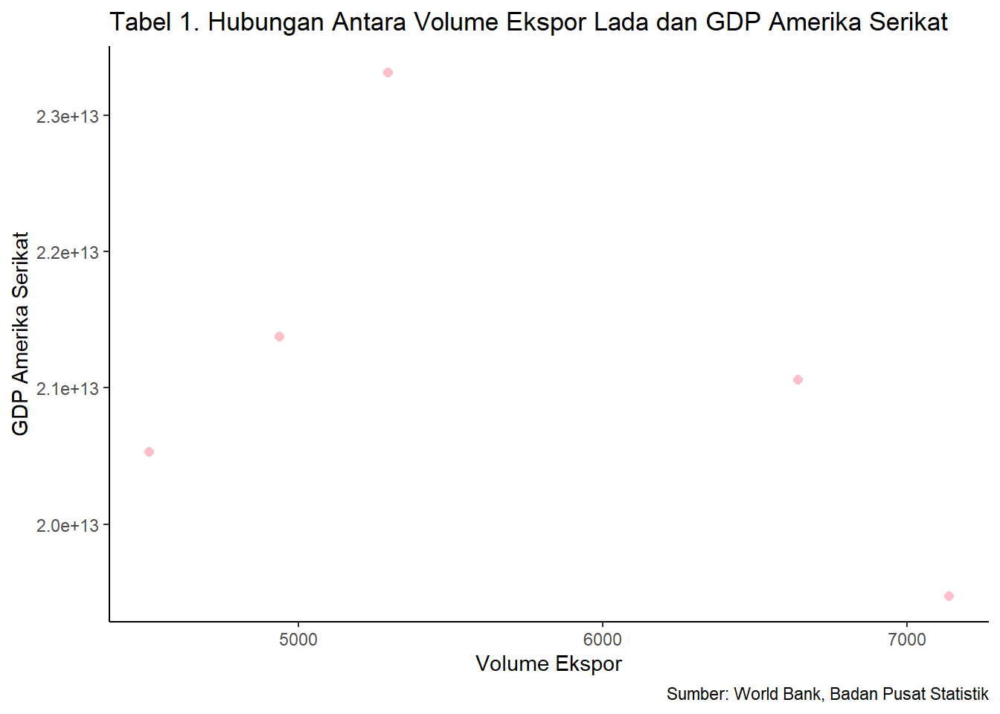

Analisis Pengaruh Volume Ekspor Lada Indonesia Terhadap PDB Amerika Serikat Pada Tahun 2017-2021
Metode Penelitian Politeknik APP Jakarta
Author
Mutiara Maharani
Published
January 20, 2023
0.1 Latar belakang
Perdagangan internasional merupakan faktor yang sangat penting untuk mempercepat pertumbuhan ekonomi negara. Kegiatan perdagangan internasional mampu meningkatkan Gross Domestik Produk (GDP) suatu negara dan dapat membantu suatu negara mencapai pertumbuhan ekonomi melalui sektor-sektor dengan keunggulan komparatif.
Sub sektor pertanian yang selalu memberikan sumbangsih terhadap perekonomian Indonesia dan berkontribusi dalam perdangan internasional adalah sektor perkebunan. Indonesia sendiri dikenal sebagai penghasil rempah-rempah terbesar di dunia. Berdasarkan data ari data Negeri Rempah Foundation, sekitar 400-500 jenis rempah di dunia, 275 di antaranya ada di Asia Tenggara dan Indonesia menjadi negara yang memiliki jenis rempah terbesar sehingga dijuluki sebagai Mother of Spices (Kumoratih et al., 2021).
Lada merupakan salah satu komoditas andalan pertanian Indonesia dari sepuluh komoditi lainnya yang menjadi produk ekspor utama perkebunan Indonesia. Komoditi lada dipasarkan secara global dengan Harmonized System Code (HS Code) Indonesia untuk Lada dari genus Piper; buah dari adalah 0904. Menurut Kementerian Perdagangan 2020, komoditas yang dijuluki sebagai King of Spices lada memiliki nilai ekspor 40,88 Juta USD dan komoditas kedua sebesar 37,26 Juta USD adalah cengkeh. Dan negara-negara yang menjadi tujuan ekspor lada Indonesia diantaranya adalah Amerika Serikat dan beberapa negara Uni Eropa.
Sebagian besar produksi lada Indonesia digunakan untuk kegiatan ekspor dan sisanya untuk konsumsi dalam negeri (Pusat Data dan Sistem Informasi Pertanian, 2018). Menurut data ITC (2019), Amerika Serikat adalah negara importir lada terbesar dunia, dengan nilai impor pada tahun 2018 mencapai US$ 2.612,379 ribu, namun Indonesia hanya mampu mengekspor lada ke Amerika sebesar US$ 17,872 ribu pada tahun yang sama. Amerika sendiri merupakan negara dengan perekonomian terbesar didunia, yang memiliki nilai Gross Domestik Produk (GDP) sebesar US$ 15,7 triliun setara dengan seperempat total GDP global. Berdasarkan penjelasan di atas, maka penelitian ini berfokus untuk menganalisis mengenai pengaruh volume ekspor lada Indonesia terhadap nilai GDP Amerika Serikat.
0.2 Ruang lingkup
Penelitian ini mengambil data volume ekspor lada Indonesia bersumber dari Trademap selama kurun waktu 2017 sampai 2021, kemudian dibandingkan dengan GDP Amerika Serikat yang bersumber dari The World Bank (2021).
0.3 Rumusan masalah
Dari pendahuluan yang sudah dikemukakan oleh penulis maka dapat didapatkan rumusan masalah sebagai berikut:
1. Apakah volume ekspor lada Indonesia ke Amerika Serikat berpengaruh terhadap PDB Amerika Serikat?
0.4 Tujuan dan manfaat penelitian
Tujuan dari penelitian ini adalah untuk mengetahui apakah volume ekspor lada Indonesia ke Amerika Serikat berpengaruh terhadap PDB Amerika Serikat. Penelitian ini juga diharapkan dapat menjadi gambaran atau acuan untuk menetapkan kebijakan ataupun keputusan terhadap ekspor lada ke Amerika Serikat dari seberapa besar pengaruh ekspor terhadap GDP Amerika Serikat.
1 Studi pustaka
Jurnal berjudul “Analisis Pengaruh Volume Ekspor Lada Indonesia Terhadap PDB Amerika Serikat Pada Tahun 2017-2021” ini disusun dengan mengacu pada ketersediaan sumber daya alam Indonesia yang mumpuni, komoditi lada sebagai aspek utama dalam ekspor perkebunan dan dampaknya bagi GDP Amerika Serikat.
Amir M. S (2004:1), ekspor adalah upaya melakukan penjualan komoditas di Indonesia kepada negara lain, dengan mengharapkan pembayaran dalam valuta asing, serta melakukan komoditi dengan memakaibahasa asing. Untuk itulah, dalam menanggapi bagaimana dampak nilai ekspor lada putih ke Vietnam terhadap nilai tukar rupiah Jurnal ini dibuat.
Teori GDP Dikutip dari e-Modul Ekonomi Kemdikbud oleh Tri Ismiyati, pengertian GDP adalah nilai barang atau jasa suatu negara, yang dihasilkan oleh faktor-faktor produksi milik warga negara dan warga negara asing yang tinggal di negara tersebut.
2 Metode penelitian
2.1 Data
Data yang digunakan dalam penelitian ini adalah data sekunder dalam bentuk time series dengan rentang waktu 2017-2021 berdasarkan nilai ekspor lada Indonesia ke Amerika Serikat terhadap nilai GDP Amerika Serikat.
Tahun
Volume Ekspor
Nilai GDP
2017
7,137
$19,477,336,549,000.00
2018
4,510
$20,533,057,312,000.00
2019
4,936
$21,380,976,119,000.00
2020
6,640
$21,060,473,613,000.00
2021
5,294
$23,315,080,560,000.00
Sumber : Trademap
library(readxl)
Warning: package 'readxl' was built under R version 4.2.2
dat<-read_excel('latihan2.xlsx')library(ggplot2)
Warning: package 'ggplot2' was built under R version 4.2.2
ggplot(data=dat, aes(x=X, y=Y))+geom_point(color='pink', size=2)+labs(title="Tabel 1. Hubungan Antara Volume Ekspor Lada dan GDP Amerika Serikat",x="Volume Ekspor",y="GDP Amerika Serikat",caption ="Sumber: World Bank, Badan Pusat Statistik") +theme_classic()

Figure 1: Hubungan Antara Volume Ekspor Lada dan GDP Amerika Serikat
City and highway mileage for 38 popular models of cars.Color by number of cylinders
2.2 Metode analisis
Metode yang digunakan adalah metode kuantitatif dengan variabel X sebagai nilai ekspor lada Indonesia ke Amerika Serikat dan variabel Y sebagai nilai GDP Amerika Serikat. Metode yang dipilih adalah regresi univariat atau Ordinary Least Square (OLS) dengan 1 variabel independen. Penelitian ini bermaksud mencari hubungan antara volume ekspor dan nilai GDP Amerika Serikat. Spesifikasi yang dilakukan adalah:
\[
y_{t}=\beta_0 + \beta_1 x_t+\mu_t
\] Di mana:
\(_yt\) adalah volume ekspor terhadap nilai GDP Amerika Serikat dan
\(x_t\) adalah GDP Amerika Serikat.
\(μ\) adalah Error terms
3 Pembahasan
3.1 Pembahasan masalah
Time Series Plot of GDP USA
Dari Time Series Plot tersebut, data GDP USA tahun 2017-2021, nilai GDP USA mengalami kecendrungan dan trend naik kecuali pada tahun ke-4 (2020). Hal tersebut bisa diindikasikan karena dampak dari Covid-19.
Time Series Plot of Volume Ekspor
Dari Time Series Plot tersebut, data volume ekspor USA 2017-2021, nilai volume ekspor USA tidak mengalami sebuah trend yang naik/turun. Terlihat bahwa nilai trend fluktuaktif kadang naik dan kadang turun, puncaknya pada tahun ke-2 (2018) turun drastis dari tahun 2017.
Call:
lm(formula = Y ~ X, data = dat)
Residuals:
1 2 3 4 5
-8.884e+11 -1.276e+12 -1.940e+11 4.217e+11 1.937e+12
Coefficients:
Estimate Std. Error t value Pr(>|t|)
(Intercept) 2.429e+13 3.737e+12 6.499 0.0074 **
X -5.494e+08 6.451e+08 -0.852 0.4570
---
Signif. codes: 0 '***' 0.001 '**' 0.01 '*' 0.05 '.' 0.1 ' ' 1
Residual standard error: 1.459e+12 on 3 degrees of freedom
Multiple R-squared: 0.1947, Adjusted R-squared: -0.07375
F-statistic: 0.7253 on 1 and 3 DF, p-value: 0.457
Hasil regresi di atas yaitu regresi univariate yang digunakan untuk mengetahui hubungan antara variabel independen dengan variabel dependen. Variabel independen yang digunakan adalah nilai ekspor dan variabel dependen yang digunakan yaitu pertumbuhan PDB Amerika Serikat.
Dari hasil di atas dapat dilihat bahwa regresi volume ekspor berpengaruh negatif terhadap pertumbuhan PDB Amerika Serikat. Koefisien volume ekspor sebesar -5.494e+08 berarti apabila volume ekspor meningkat 1 persen maka akan menurunkan pertumbuhan ekonomi sebesar -5.494e+08 dan apabila volume ekspor menurun sebesar 1 persen maka akan meningkatkan pertumbuhan ekonomi sebesar 5.494e+08. Hal tersebut sejalan dengan teori perdagangan internasional, apabila jumlah barang atau jasa yang di ekspor ke luar negeri semakin banyak maka di dalam negeri harus memproduksi barang dan jasa lebih banyak juga.
4 Kesimpulan dan Saran
Dari hasil penelitian ini, dapat disimpulkan bahwa GDP Amerika Serikat tidak berpengaruh signifikan terhadap volume eskpor lada ke Amerika Serikat. Nilai R-Sq juga masih kecil, hal ini berarti perlu mencari faktor-faktor lainnya yang bisa berpengaruh signifikan terhadap volume eskpor lada Indonesia ke Amerika Serikat.
Dan berdasarkan hasil, saran atau rekomendasi penelitian ini adalah Indonesia perlu menjaga kontinuitas ekspor ladanya di negara tujuan ekspor seperti Amerika Serikat sehingga mampu bersaing dengan negara kompetitor lainnya.Beberapa upaya yang dapat diterapkan di antaranya peningkatan produktivitas, peningkatan kualitas atau mutu lada dan hilirisasi. dapat didukung dengan sosialisasi teknologi budidaya kepada petani lada.
[ITC] International Trade Center, 2021, Volume Ekspor Lada Dunia, [Internet], [diakses pada 17 Januari 2023], Tersedia pada: https://www,trademap,org/tradestat.